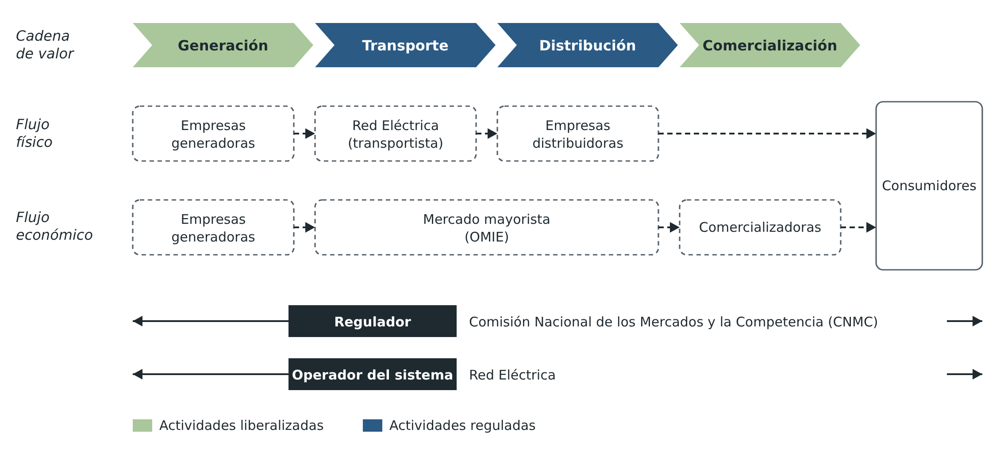

El mix eléctrico en España
El mix eléctrico es el reparto de la electricidad producida entre las diferentes tecnologías de generación. En los últimos años el mix español ha cambiado mucho: cada vez pesan más las renovables y las fuentes que no emiten CO2.
Así se repartió la generación eléctrica en España en 2025:
| Tecnología | Parte de la generación |
|---|---|
| Eólica | 21,6 % |
| Nuclear | 19,0 % |
| Solar fotovoltaica | 18,4 % |
| Ciclo combinado | 16,8 % |
| Hidráulica | 12,4 % |
| Resto (cogeneración, solar térmica, otras renovables, residuos y carbón) | 11,8 % |
En total, el 55,5 % de la electricidad fue renovable y el 75,5 % se produjo sin emitir CO2. Si se cuenta también el autoconsumo de los tejados solares, las renovables llegan al 56,6 %. No busques que el 55,5 % renovable y el 19,0 % nuclear sumen el 75,5 %: son cifras que Red Eléctrica calcula por separado y no cuadran exactamente al sumarlas.
Fuente: Red Eléctrica, «El sistema eléctrico español en 2025» (marzo de 2026).
De las fuentes que emiten CO2, la principal es el ciclo combinado de gas. Por eso el precio del gas influye tanto en el de la electricidad, como se vio en 2021 y 2022, cuando el gas se encareció mucho.
Potencia instalada y energía generada
Para analizar el mix hay que distinguir dos magnitudes que se confunden a menudo:
- La potencia instalada de una tecnología es la suma de las potencias nominales de todas sus centrales. Se mide en MW o GW y dice cuánto podrían dar todas a la vez.
- La energía generada es lo que esas centrales han producido de verdad en un periodo. Se mide en MWh, GWh o TWh.
Una tecnología puede tener mucha potencia instalada y generar relativamente poca energía, porque no funciona todo el tiempo a su potencia nominal. Para comparar tecnologías se usa el factor de capacidad: la energía generada en un periodo dividida por la que se habría generado funcionando todo ese periodo a la potencia instalada.
\[\text{FC} = \frac{E}{P\cdot t}\]
donde:
- \(\text{FC}\): factor de capacidad (sin unidades; se suele dar en %)
- \(E\): energía generada en el periodo (MWh)
- \(P\): potencia instalada (MW)
- \(t\): horas del periodo (h); un año tiene 8760 h
Lo mismo se puede expresar con las horas equivalentes de funcionamiento, \(h_{\text{eq}} = E/P\): las horas que habría tenido que funcionar a plena potencia para generar esa energía.
Ejemplo resuelto
Los datos son supuestos. Un parque eólico de 50 MW ha generado 105 GWh en un año. Calcula sus horas equivalentes y su factor de capacidad.
- Energía en MWh: \(105\ \text{GWh} = \text{105 000}\ \text{MWh}\).
- Horas equivalentes: \(h_{\text{eq}} = \dfrac{\text{105 000}\ \text{MWh}}{50\ \text{MW}} = 2100\ \text{h}\).
- Factor de capacidad: \(\text{FC} = \dfrac{\text{105 000}}{50\cdot 8760} = \text{0,240}\), es decir, un 24 %.
El parque ha producido como si hubiera funcionado a plena potencia 2100 de las 8760 horas del año.
Tecnologías gestionables y no gestionables
La generación tiene que igualar a la demanda en todo momento, y no todas las tecnologías pueden ajustarse a ella:
- Las gestionables suben o bajan su producción cuando lo pide el sistema, porque su energía está almacenada: ciclo combinado, hidráulica de embalse y de bombeo, solar térmica con almacenamiento o biomasa.
- Las no gestionables producen cuando hay recurso natural: eólica, fotovoltaica e hidráulica fluyente. Si no hay viento o no hay sol, no producen, aunque se necesite.
- La nuclear funciona de forma continua, casi siempre a plena potencia, porque cambiar su producción es lento y poco rentable.
Por eso, cuantas más renovables no gestionables hay en el mix, más respaldo necesita el sistema: centrales gestionables o almacenamiento (bombeo, baterías, sales fundidas) para las horas sin sol ni viento.
Estas cifras cambian cada año. En la tarea de esta sesión trabajarás con los datos más recientes, sacados directamente de Red Eléctrica.
El mercado eléctrico español
El 27 de noviembre de 1997 la generación y la comercialización de la energía eléctrica pasaron a estar liberalizadas en España.
Significa que cualquier empresa puede producir o comercializar electricidad, siempre y cuando esté acreditada por la Comisión Nacional de los Mercados y la Competencia (CNMC).
En cambio, el transporte y la distribución son actividades reguladas. No tiene sentido la competencia entre diferentes empresas de redes. Se duplicarían ineficientemente las infraestructuras en una misma zona.
- El transporte es gestionado por Red Eléctrica de España (REE)
- La distribución la realizan unas pocas grandes compañías y otras muchas pequeñas que operan a nivel local.
Tanto las empresas de generación como las comercializadoras pueden utilizar las redes de transporte y distribución pagando un peaje de acceso a las compañías distribuidoras.

AmpliarAgentes del mercado
El mercado eléctrico español está compuesto por cinco agentes independientes (generador, transportista, distribuidor, comercializador y consumidor directo en el mercado) y otros dos agentes encargados de vigilar el funcionamiento de toda la red (regulador y operador de sistema).
Agentes independientes:
Generadores
Producen electricidad y deben construir, operar y mantener las centrales de generación. Las principales empresas de generación en España son:
- Iberdrola
- Endesa
- Naturgy
- EDP
- Y muchas otras, también pequeñas productoras renovables.
Transportistas
Llevan la electricidad desde los centros de producción hasta la red de distribución, haciendo las tareas de construcción y mantenimiento de la red eléctrica de transporte.
La empresa de transporte en España es Red Eléctrica (REE), que es el transportista único.
Distribuidores
Llevan la energía hasta el punto de consumo y se encargan del contador. No venden la energía: eso lo hacen las comercializadoras. La distribuidora no se elige: depende de dónde vives.
Además, deben construir, mantener y operar las instalaciones de la red de distribución.
Las principales empresas de distribución en España son:
- Las de los grandes grupos: Iberdrola, Endesa, Naturgy y EDP.
- Muchas pequeñas distribuidoras locales.
Comercializadores
Empresas que compran la energía eléctrica en el mercado mayorista y la venden a los consumidores que no desean, o no se les permite, participar directamente en el mercado mayorista.
Consumidores directos
Son grandes consumidores, como algunas industrias, que compran la energía directamente en el mercado mayorista, sin comercializadora.
Los hogares compran siempre la electricidad a través de una comercializadora.
Los agentes encargados de vigilar el sistema son:
Regulador
Es el organismo público independiente responsable de asegurar el funcionamiento justo y eficiente del sector eléctrico.
En nuestro país es la Comisión Nacional de los Mercados y la Competencia (CNMC), que en 2013 asumió las funciones de la antigua Comisión Nacional de Energía.
Operadores
El operador del mercado y el operador del sistema son los organismos encargados de la gestión económica y técnica del sistema.
- OMIE (Operador del Mercado Ibérico de Energía) es el responsable de la gestión económica del mercado mayorista que comparten España y Portugal.
- Red Eléctrica (REE) es la encargada de la gestión técnica del sistema: vigila en todo momento que la generación iguale al consumo.
En este vídeo se presenta a los agentes del sistema y se expone la problemática de generar la electricidad demandada en tiempo real:
Elementos del mercado
Este mercado de producción está formado por tres elementos principales: el mercado diario, el mercado intradiario y el mercado de servicios complementarios.
Mercado diario
La mecánica del mercado diario consiste en:
- La presentación de ofertas de venta y compra de energía (de venta, por parte de los generadores, y de compra, por parte de las comercializadoras y los consumidores directos). Estas ofertas se realizan para cada uno de los 96 cuartos de hora del día siguiente: desde octubre de 2025 el mercado trabaja en periodos de 15 minutos.
- Una vez recibidas las ofertas se realiza la casación, partiendo de la oferta de venta más barata hasta igualarla a la demanda. Este punto donde se igualan la oferta y la demanda establecerá el precio final para todas las ofertas, aunque fueran inferiores a ese precio (es el llamado sistema marginalista).
Mercado intradiario
Si, una vez establecido el programa diario, se da la necesidad de efectuar algunos ajustes en sus ofertas o demandas se pone en marcha el llamado mercado intradiario, que funciona bajo los mismos criterios.
Combina varias subastas a lo largo del día con un mercado continuo, en el que se puede comprar y vender hasta poco antes del momento de la entrega.
Con todos estos ajustes queda fijado el programa final de cada cuarto de hora.
Mercado de servicios complementarios
Este mercado está constituido por los procesos que permiten resolver los desequilibrios que puedan surgir entre generación y demanda.
Agrupa un conjunto de mecanismos de carácter competitivo que complementan el mercado de producción. Además, existen otros servicios complementarios que los agentes del mercado ponen a disposición de la operación del sistema como condición para poder participar en él.
Todos los procesos que forman parte de este mercado de electricidad permiten el control y la operación en tiempo real del sistema eléctrico, de manera que en cualquier momento la seguridad y la calidad en el suministro eléctrico estén garantizadas.
Precio final
Lo que paga cada consumidor no es directamente el precio del mercado diario: depende de su contrato. Por ejemplo, un cliente con precio fijo paga lo que contrató, aunque el mercado suba o baje.
Por eso, cuando los precios cambian mucho, como pasó en 2021 y 2022, mirar solo el precio del mercado diario da una imagen incompleta de lo que pagan los hogares.
En este vídeo se explica cómo se fija el precio de la electricidad en el mercado y se discuten las ventajas e inconvenientes de tener un sistema marginalista en el mercado y por qué se utiliza este aunque pudiera parecernos más injusto.
Mercado libre y mercado regulado
La demanda la constituyen los consumidores finales, que pueden ser tanto particulares como industriales. Estos consumidores no pagarán el precio del mercado mayorista ya visto, sino que pueden regirse por dos fórmulas diferentes:
- Un mercado libre: contratos hechos con las comercializadoras a un precio fijo negociado con ellas y, normalmente, revisado anualmente.
- Un mercado regulado: el precio se calcula a partir de los mercados mayoristas (el pool), más una serie de costes regulados. Solo pueden acogerse los consumidores con una potencia contratada de hasta 10 kW, como la mayoría de las viviendas.
El consumidor que está en el mercado regulado paga un precio que cambia cada hora, llamado PVPC (precio voluntario para el pequeño consumidor). Para suavizar las subidas y bajadas, desde 2024 una parte se calcula con precios pactados a plazo: en 2026, el 55 %.
A finales de 2025, unos 8,2 millones de hogares (el 27,4 % de los consumidores domésticos) seguían en el PVPC; el resto tenía contrato en el mercado libre. Fuente: CNMC, informe de supervisión de los mercados minoristas (julio de 2026).
Los impuestos sobre la electricidad
Independientemente de si la electricidad se compra en el mercado libre o el regulado, hay que añadir una serie de impuestos que pagará el consumidor final (directamente o indirectamente al aumentar el precio las generadoras). Son, básicamente:
- Impuesto especial sobre la electricidad: un 5,11 % (exactamente, 5,11269632 %) sobre la suma de los términos de potencia y energía.
- IVA: el 21 %, que se aplica sobre todo lo anterior, incluido el impuesto eléctrico. Este 21 % y el 5,11 % del impuesto eléctrico son los tipos normales: a veces se rebajan de forma temporal.
- Otros impuestos: no aparecen directamente en la factura del consumidor, porque los pagan las empresas generadoras. Sin embargo, se reflejan en el precio del mercado, así que acaba pagándolos el consumidor final de forma indirecta. Son el impuesto sobre el valor de la producción de energía eléctrica, que se está reduciendo hasta desaparecer en 2028, el canon por el uso del agua de las centrales hidráulicas y los impuestos sobre los residuos nucleares.
Verdadero o falso
Decide si cada afirmación es verdadera o falsa y lee después la explicación.
00:00:
Tarea: análisis del mix eléctrico
Tarea: análisis del mix eléctrico español
Trabajo individual. Vas a analizar, con datos reales, de dónde sale la electricidad en España, qué papel cumple cada tecnología y cómo se relaciona todo con el precio. Saca los datos de Red Eléctrica y de OMIE (tienes los enlaces en el bloque de abajo): no copies los de esta página.
- Los datos. Elige un periodo (el último año completo o un mes) y consulta, para las seis tecnologías que más producen, su potencia instalada (MW) y la energía que han generado (GWh). Ponlo en una tabla con sus unidades e indica de qué página salen los datos y a qué periodo corresponden.
- Los cálculos. Con tus datos, calcula el porcentaje de cada tecnología en la generación, la parte renovable, la parte que se produce sin emitir CO2 y el factor de capacidad (o las horas equivalentes) de cada tecnología. En cada cálculo escribe la fórmula, la sustitución con unidades y el resultado.
- El papel de cada tecnología. Con tus resultados, explica qué papel cumple cada tecnología en el sistema: si es gestionable o depende del recurso natural, si funciona de forma continua o como respaldo. Explica por qué alguna tecnología con mucha potencia instalada genera relativamente poca energía.
- Un día: generación y precio. Elige un día y consulta cómo cambian a lo largo del día la generación de cada tecnología y el precio del mercado diario, que se fija para cada cuarto de hora. ¿En qué momentos es más barata la electricidad y qué tecnologías dominan entonces? Explica cómo se forma el precio con la última oferta que hace falta para cubrir la demanda (sistema marginalista) y por qué los momentos con mucha generación renovable suelen ser más baratos.
- Tu valoración. En 10 a 15 líneas, valora el mix que has analizado: por ejemplo, el rendimiento de las centrales térmicas frente a las renovables, las emisiones, la dependencia del gas que se compra fuera o la necesidad de almacenamiento. Cada afirmación tiene que apoyarse en un dato o en un cálculo de tu trabajo.
Escribe el análisis en esta plantilla: ábrela con tu cuenta de educaand, haz una copia en tu Drive y rellénala. Ya trae los apartados y las tablas; los datos, los cálculos y las conclusiones los pones tú. Indica de dónde sale cada dato y en qué fecha lo consultaste. Cuando termines, descárgalo en PDF y entrégalo en Moodle, en la tarea «Análisis del mix eléctrico».
Datos e informes del sistema eléctrico español
Estos enlaces te dan una imagen clara y actual del sistema eléctrico español. Los necesitarás para la tarea:
- Estructura de la generación (Red Eléctrica): la energía que ha producido cada tecnología, por año, por mes o por día.
- Potencia instalada (Red Eléctrica): los MW instalados de cada tecnología.
- Demanda y generación de energía eléctrica en tiempo real.
- Precio de la energía eléctrica en España.
- OMIE, el operador del mercado: resultados del mercado diario.
- Mapas de los distintos tipos de centrales eléctricas en España.
- Informes anuales del sistema eléctrico español.